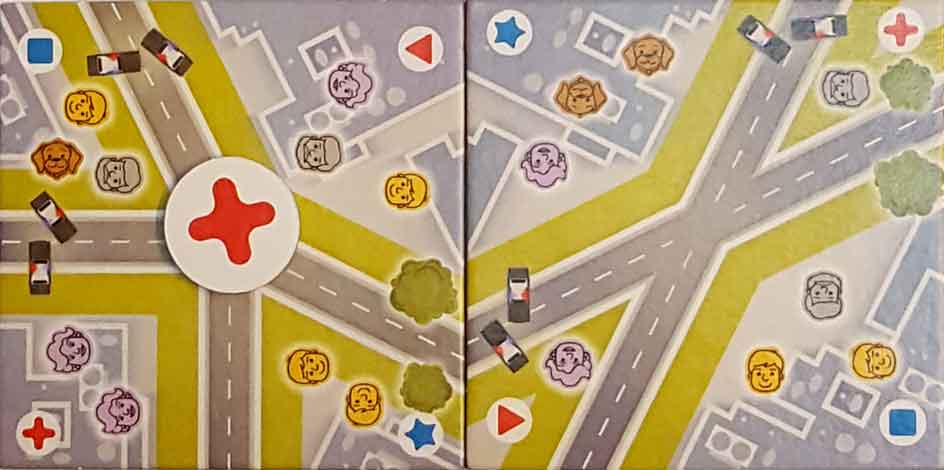

In this 5 Minute Chase review, D and Will take a look at the fast-moving, asymmetric tile laying game from designers Antony Proietti and Dave Neale. Published by Board & Dice, 5 Minute Chase has its players splitting time between running from cops and chasing after criminals. The fugitive player, or runner, has to rapidly place tiles and collect a number of items before returning to their safe-house. The police player, or chaser, pursues the runner(s) by placing tokens of their own. Is this enjoyably chaotic and often sloppy game worth it? We try to determine that and more in the review(s) below.
D reviews 5 Minute Chase
 (Author’s
note: this review is meant to accompany our gameplay video and will not
go in-depth on the game’s rules. If you’re interested in learning how
the game is played, please watch the video. It’s not bad.)
(Author’s
note: this review is meant to accompany our gameplay video and will not
go in-depth on the game’s rules. If you’re interested in learning how
the game is played, please watch the video. It’s not bad.)
5 Minute Chase strikes me as a good idea that’s been executed poorly. The very notion of a “real-time” board game isn’t one that inspires much excitement in someone like me, who considers the more deliberate nature of board games to be one of their selling points. But, as I read through the rulebook for the first time, I started to understand how this concept could be fun, and the cop-chasing-criminal theme is a pretty perfect fit for this sort of game. In fact, it reminds me of my main criticism of Letters from Whitechapel/Whitehall Mystery, where the chase aspect of the game is somewhat undercut by the lack of any time-based restrictions. So where does 5 Minute Chase falter, in my mind? Balance.
In order for a game like this to work, both sides have to have about an equal chance of coming out on top. Or in other words, both sides should face a similarly difficult challenge. Sadly, in 5 Minute Chase, the balance is completely off. The game designers clearly recognized this, as winning a round as a runner is rewarded more greatly than winning as a chaser, but this consideration doesn’t change the fact that playing as the runner is way too difficult. As a chaser, your job is simple: see which people are looking in the right direction and place down the corresponding marker. As a runner, you need to worry about lining up the streets, making sure the police roadblocks are paired with trees, putting down the money, map and keys tiles (which are almost entirely surrounded by barricades), and then making it back to a safe-house. Your best bet as a runner is to simply play as many tiles as possible and hope that the chaser messes up, because accomplishing everything you’re tasked with without being caught is almost impossible.
It should’ve been a giveaway that 5MC had issues when a somewhat significant portion of its rulebook was dedicated to explaining how to deal with people screwing up. Obviously, mistakes are bound to occur in real-time games, since tension and nerves will be higher than usual. Unfortunately, in 5MC they’re the norm rather than a mere possibility. Nothing cheapens a win like not actually being responsible for it. And to win after your opponent made a mistake and you failed to achieve your own goal is a joyless experience. That is all too often the end result in this game, and I bet a simple streamlining of the runner’s goals would solve this problem.
This will probably be someone’s cup of tea. Younger audiences, for example, might get more mileage from it than I have. It’s playable and looks fine, and it might appeal to people who like their fun to be more on the chaotic side. But, as a first taste of real-time board games, I’m left with a somewhat sour taste in my mouth. I’m still willing to try other games of the genre, but 5 Minute Chase doesn’t inspire much confidence.
D’s Rating: Two and One-Half Stars out of Five.
Will reviews 5 Minute Chase
 Rarely have I ever been so conflicted about a board game as I am towards 5 Minute Chase.
In the moment, the game is really chaotic, highly entertaining, and
quite hilarious. Unfortunately, it’s also pretty awkward and frustrating
to play, with a number of design decisions that noticeably hinder it.
The theme/story behind the game is that a prisoner has escaped
incarceration and the cops are on his or her tail, which sounds like a
lot of fun in theory. Sadly, when adapted to asymmetric, tile laying
gameplay, the overall experience is more miss than hit.
Rarely have I ever been so conflicted about a board game as I am towards 5 Minute Chase.
In the moment, the game is really chaotic, highly entertaining, and
quite hilarious. Unfortunately, it’s also pretty awkward and frustrating
to play, with a number of design decisions that noticeably hinder it.
The theme/story behind the game is that a prisoner has escaped
incarceration and the cops are on his or her tail, which sounds like a
lot of fun in theory. Sadly, when adapted to asymmetric, tile laying
gameplay, the overall experience is more miss than hit.
Component-wise, I have no complaints when it comes to 5 Minute Chase, at least in regards to its build quality. However, I do have some issues with the artwork, specifically how it affects the gameplay experience. First off, the artwork isn’t particularly subpar in any way, but it’s also not that attractive. I think a little more detail here or there could’ve made the gameplay smoother. This leads me to my second point – everything (icons, trees, etc.) is a bit too small. In this game, being able to spot everything quickly is paramount, but that becomes difficult when the actual tiles themselves are rather compact, presumably to fit in the box and keep the price down. The tiles also needed to be small so the game could still be played on a normal sized table. In other words, the concept of this game restricted how large the tiles could be and subsequently how large the icons could be. This is entirely understandable, but that understanding doesn’t make the gameplay any better.
Mediocre art design and issues with icon prominence could be ignored if the gameplay remained consistent and fair. Regrettably, 5 Minute Chase suffers from imbalance problems, especially in regards to the ease of play of the chasers and the runners. On one hand, being a chaser is relatively straightforward – you place specific tokens down based on the direction the running player went and the number of face icons looking that direction. I acknowledge that there were some smart decisions made to slow the chasing player down. For instance, the face icons aren’t uniform in shape or color, which makes quickly identifying the direction their facing a tad more difficult. You also have to ensure that you’ve flipped the token you’re placing to the correct side while grabbing it. Other than that though, being the chaser is pretty easy; no, it’s too easy.
On the other hand, being the runner is laborious and tough, almost to the point that it’s impossible to complete your goal of collecting three items and returning to the safe-house. The gameplay kicks off when the running player(s) puts down two starting tiles, giving that player a two-tile head start. In reality, that head start should probably be three tiles, because almost immediately the chaser will be on the runner like white on rice. While the chaser has only two things to consider when playing, the runner has to consider where roadblocks are and where trees are, as well as how to fit in the three items on their path. And they have to make sure that all of the streets line up. It’s a lot to think about and quickly becomes overwhelming, but it’s also never boring. And thematically, it’s pretty appropriate that the escaped prisoner never has a moment to breathe, but again, that fact doesn’t improve the gameplay at all.
Then again, 5 Minute Chase was designed with mistakes in mind, and this is my favorite part of the game. Sure, it’s frustrating that you’ll basically never complete your objectives as the runner, but you’re not really supposed to. In reality, your goal as the runner is to create a long enough path that the chaser makes a mistake. If he or she does so, then you win that round, even if they caught up to you. In our experience though, it’s as common for the runner to make a mistake, which I think is an error on the designers’ part. This game should almost allow for one or two screw-ups by the runner(s), since they almost always lose. Regardless, it’s neat to play a game that embraces gameplay flubs, since we often dread making blunders when recording. This is probably the right time to point out that I hate how you’re supposed to check if the chaser played the proper tokens. The rules tell you to flip over the tiles and check the (incredibly tiny) icons on the back. Now, I wouldn’t have a problem doing that if it wasn’t so awkward. If the path goes horizontally, then you flip the tile vertically. If the path goes vertically, then you do the inverse. This system quickly becomes more flustering than useful. In truth, it’s simpler to leave the tiles as is and check them that way.
As I wrap up, I have to reiterate what I said in the intro paragraph – 5 Minute Chase is entertaining and often hilarious. The chaos of placing tiles in real time is something I didn’t expect to enjoy as much as I did. This is why I’m so conflicted right now, because I know that this game, despite being fun, is also glaringly flawed. The icons are too small to quickly identify, being a runner is entirely too difficult, and the system of checks is overly awkward. Having said that, I’m not sure that I can come up with that many answers to this game’s problems. I’ve come to the conclusion that an asymmetric, tile laying game such as this will always feature inherent flaws that are nigh impossible to correct. So if you ever ponder purchasing a board game like this, I advise that you take that fact into consideration. But you should also consider that these games are uniquely amusing, at least in certain moments when you don’t give a crap.
I give 5 Minute Chase a: C+
Leave a Reply
You must be logged in to post a comment.